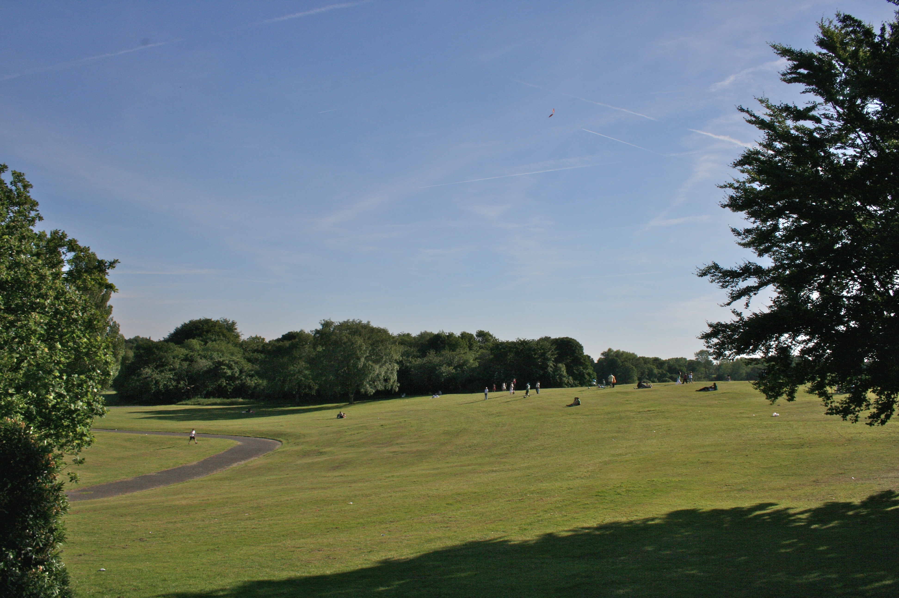

ABOUT HEATON PARK
Heaton park others multiple different landmarks like the Boating lake which is 12-acre, this lake was contructed between 1908 and 1912.
Also there are lakeside café to hang out with your family or friends. On this lake there are three islands which are home to large number of ornamental birds and wildfowl, there are rowing boats for hire during the summer months.